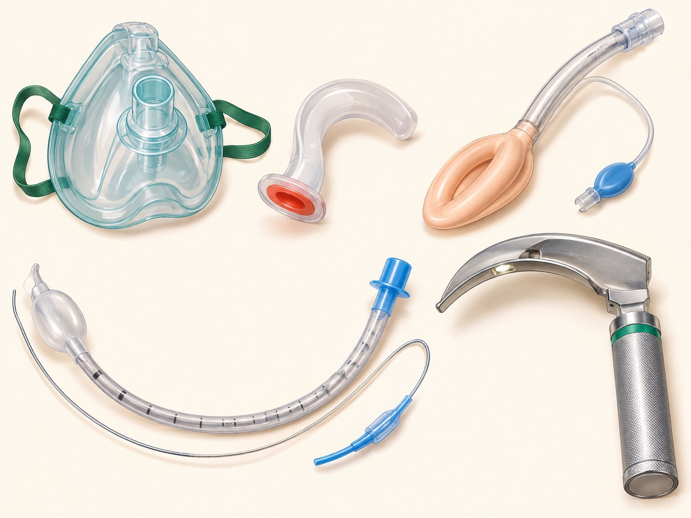

メイン教材
症例別 麻酔計画シート40
よく出会う40の症例を、1症例1ページ・同じ8項目で整理した計画シート。術前に開いて、指導医と相談する前の「計画の下書き」がすぐに作れます。
PDFを開く 4.2 MBよく出会う40の症例を、同じ8項目で整理した計画シート。術前に開けば、指導医と相談する前の「計画の下書き」がすぐに作れます。
よく出会う40の症例を、1症例1ページ・同じ8項目で整理した計画シート。術前に開いて、指導医と相談する前の「計画の下書き」がすぐに作れます。
PDFを開く 4.2 MB



術後回診で聞くこと・診ること・つなぐことをまとめたテンプレートと、症例から学びを残す振り返りシート。計画 → 実施 → 振り返りのサイクルを回します。
PDFを開く 1.7 MB